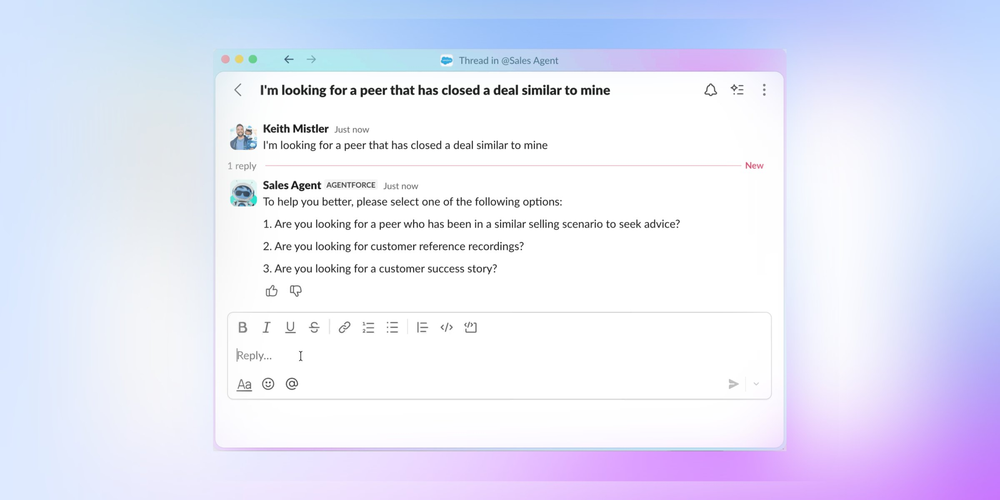
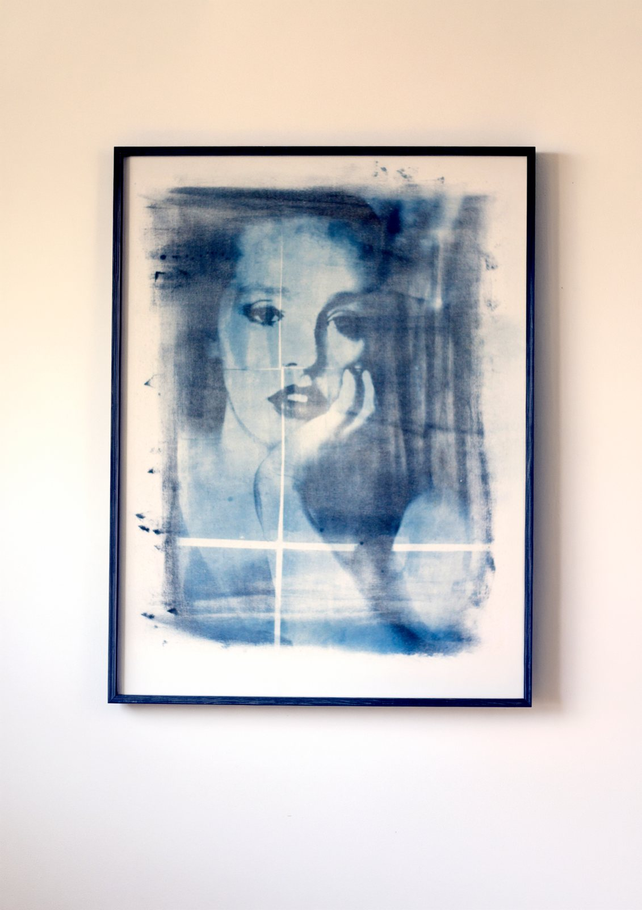
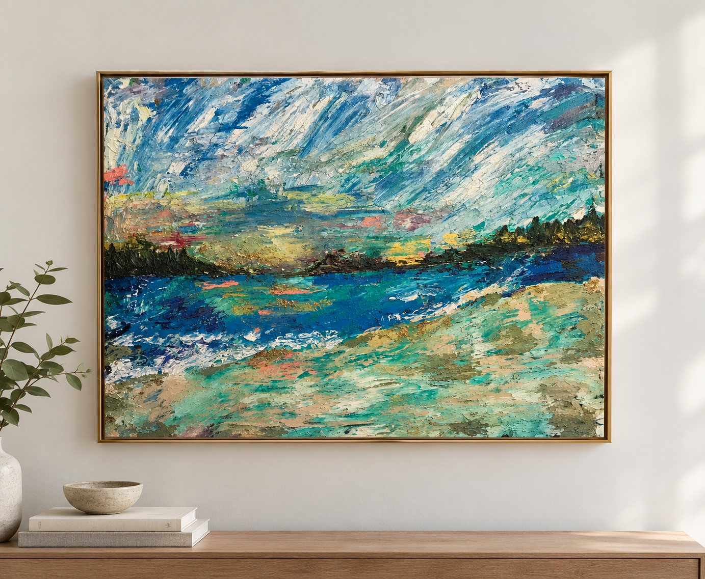
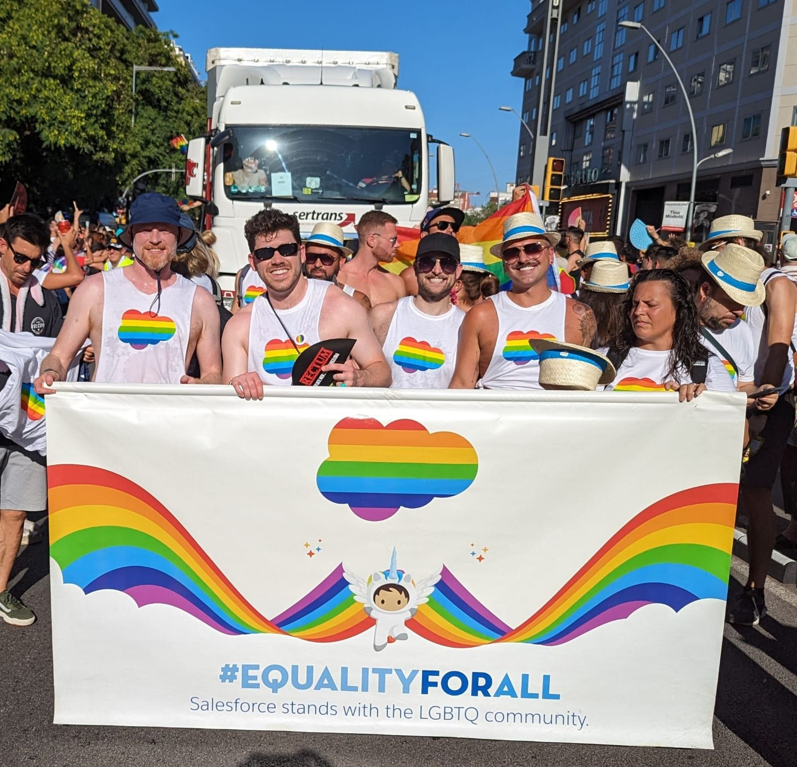

Designing for happier humans and fewer clicks.
I'm Keith, a senior UX designer who makes complex enterprise tools and AI agents feel simple. I spent 5 years designing at Salesforce, where my work helped close $110M+ in deals and saved users hours every week. These days I'm prototyping with AI and building with code.

Work that shipped and moved numbers.
Product design, AI, and research for enterprise sales teams, plus a few stories from the classroom.

An AI agent that finds the rep who already won your deal
I designed a Sales Agent skill that matches sellers with peers who closed similar deals. In its first rollout, 296 sellers started 2,138 conversations and saved about 2 hours a week each.
 →
→
From scattered assets to a platform 16.9K people use
I rebuilt navigation, demos, and content templates for an internal sales platform. Resources became its second most-clicked destination.
 →
→
Research that reshaped a sales planning roadmap
I spotted a gap nobody owned, led a 38-seller global study, and turned it into a recurring research program.
 →
→
The future-vision story behind a hospitality win
On a five-person team, I designed the microsite and vision story that helped win the Wyndham contract.
 →
→
Running a classroom like a creative studio
Students led real client projects, critiqued like pros, and mentored each other.
Designer, artist, & teacher.
in closed deals my design work contributed to
users on the sales platform I helped redesign
saved per seller each week by an AI agent I designed
students taught across a decade of design education
My path into UX wasn't traditional. That's my secret weapon.
Before tech, I spent 20+ years as an artist and a decade teaching design. I hold an MFA from Boston University. That background shows up in everything I do: visual craft, a feel for how people learn, and a habit of making complicated things clear.
At Salesforce I designed tools for the people who sell: enterprise platforms, agentic AI, and research that pushed UX upstream into strategy. I love running workshops, partnering closely with engineers, and helping teammates pick up new tools like AI prototyping.
Product & interaction design, agentic AI and conversation design, design systems
Global studies, usability testing, synthesis, research that drives roadmaps
Figma, Claude Code + Figma MCP, HTML/CSS, workshop facilitation
From teacher to experience designer.
I sat down for a podcast interview about trading the classroom for UX, and why a non-traditional path makes for better design.
Making things, just because.
Painting, cyanotypes, live music, and community. The making never stops when the laptop closes.



What teammates say.
Keith has a real talent for taking incredibly dense and complex information and transforming it into a clear, well-structured narrative that is visually stunning and easy to understand. He brings a real sense of curiosity and energy to everything he does.
Keith is a thoughtful designer who leads with real empathy. His work on high priority business tools drove big revenue impact. He turns complex business needs into genuinely high-impact design work while staying curious and collaborative.
Keith is a phenomenal designer with a blend of design, storytelling, and research that helps businesses uncover real problems and build solutions that move the needle. Beyond his professional strengths, he's a true joy to work with.